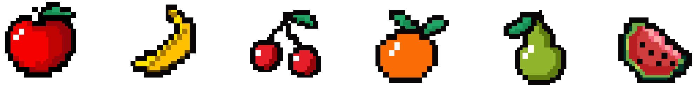
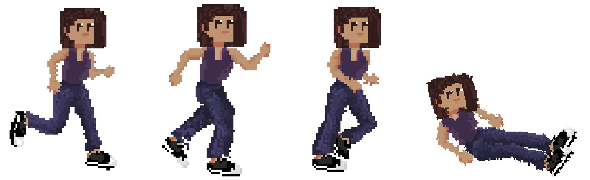

Fruit Dodge is a single-player video game made using primarily the p5.js library.
This was an assignment for my Critical Computation class at Parsons. We were tasked with making an auto-biographical game, and so naturally I decided to make a game about my hatred of fruit. Being from Costa Rica this has always been a bizarre dislike, and so I thought it would be amusing to make a game out of it. I took inspiration from Google's Dinosaur game (my favorite time-passing game) and created the sprites and animations for it. The final version of this game is seen below, as well as the sprite sheet.

